Практичний досвід · журнал «ДентАрт» 2022 №3
Консервативне лікування флюорозу та усунення білих плям після ортодонтичного лікування
Conservative treatment of fluorosis and elimination of white spots after orthodontic treatment
Після впровадження інфільтрації як щадного способу лікування вона стала дуже популярною процедурою для усунення різноманітних білих плям, зокрема спричинених флюорозом, проте згодом багато стоматологів з різних куточків світу були розчаровані, адже, за їхніми словами, цей метод діє лише інколи.
Дотримання показань до інфільтрації та вимог клінічних протоколів відіграють дуже важливу роль. Іноді результат можна значно поліпшити, а всю процедуру — полегшити, якщо спочатку провести відбілювання.
Більше не варто вважати відбілювання «глянцевою» процедурою. Це, окрім інших властивостей та переваг, — спосіб консервативного лікування, який добре надається для усунення плям білого та коричневого кольорів.
Білі плями — досить поширене явище, яке має різну етіологію. Їм довго не приділяли достатньо уваги, тому що до настання «адгезивної ери» усунення різноманітних плям було пов’язане з дуже значною руйнацією твердих тканин (установлення тих самих коронок). Потім з’явилися більш консервативні способи лікування, наприклад, механічна мікроабразія борами, використання абразивних паст і хімічна мікроабразія, з подальшим відновленням за допомогою композитів.
Нещодавно ультраконсервативне лікування з використанням хімічної ерозії, відбілювання та інфільтрації смолою стало новим способом консервативного комплексного усунення таких плям.
Клінічний випадок 1
Молодий пацієнт дуже недбало ставився до гігієни ротової порожнини, що ми відразу помітили, зокрема у пришийковій зоні, коли розпочали ортодонтичне лікування. Після зняття брекет-системи було виявлено, що через вплив нальоту емаль демінералізована. На вестибулярній поверхні білі плями часто виникають у зоні фіксованих ортодонтичних пристроїв. За різними оцінками, поширеність білих плям після зняття ортодонтичних апаратів становить 50 %,1 60 %2 або навіть 97 %.3 Ці плями не завжди відповідають контурам ортодонтичних конструкцій, але у багатьох випадках через такі конструкції пацієнт не може добре прочистити апроксимальні та пришийкові ділянки, хоча інші ділянки залишаються у доброму стані.
Є кілька способів лікування таких білих плям. Доведено, що розвитку карієсу перешкоджає посилена ремінералізація за допомогою фтору або казеїну фосфопептиду-аморфного фосфату кальцію. Проте клінічні дослідження не довели їхнього косметичного ефекту.2,3 Мікроабразивні або реставраційні техніки з використанням композитів — ефективні варіанти, але виявилося, що найкращою є інфільтрація смолою, оскільки у такому разі втрачається мінімальна кількість твердих тканин.
Для підсилення контрасту отриманого зображення робимо його менш яскравим і підвищуємо контрастність. Так можна краще роздивитися масштаб ураження і визначити ступінь демінералізації емалі. Про такий спосіб уже писали Salat і співавтори (2011).2
Перед тим, як розпочати процедуру, ізолюємо ділянку від першого до першого премоляра і добре заправляємо рабердам під ясна так, щоб не протекла слина. Зазвичай такої ізоляції більш ніж достатньо, і можна обійтися без клампів та джгутів.
Поверхнева демінералізація шляхом нанесення гелю 15 % соляної кислоти. Так ми відкриваємо доступ до гіпомінералізованого ураження. Обов’язково слідкуйте за часом. Добре промивайте водою щонайменше протягом 20 секунд і просушіть повітрям.
Щоб побачити, який вигляд матимуть зуби після інфільтрації, наносимо Icon dry, що на 99,9 % складається з етанолу. В інструкції виробник рекомендує нанести його на 30 секунд, але якщо ви бажаєте отримати дуже добре уявлення про результати лікування, ми наполегливо рекомендуємо рясно нанести етанол на 2 хвилини, адже так він проникне у тканини достатньо глибоко. Після цього оцініть стан зубів. Потім потрібно буде або знову нанести кислоту, або розпочати інфільтрацію смолою. У нашому випадку ми нанесли кислоту двічі, тому що на цьому етапі результат був задовільним.
Смола-інфільтрат (з низкою в’язкістю) проникає в уражену ділянку і заповнює пори, таким чином приховуючи білі ураження. Оскільки вам потрібно нанести смолу з низькою в’язкістю, перевірте, щоб навколишнє освітлення не було дуже сильним (і світильник теж). Залиште смолу-інфільтрат на 2-3 хвилини. На цьому етапі багато лікарів роблять одну й ту саму помилку — поспішають усе завершити, і через це смола проникає не повністю.
Видаліть зайву кількість і засвічуйте зуб протягом 30 секунд. Нанесіть гліцерин і знову засвітіть. Цей етап не є обов’язковим, але матеріал слід добре засвітити. Ми рекомендуємо засвічувати кожен зуб по 1 хвилині.
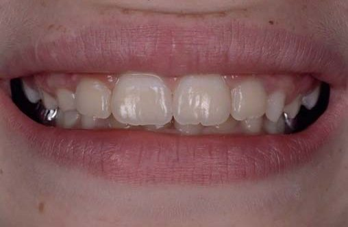
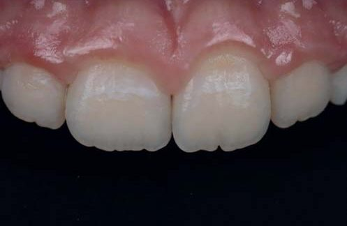
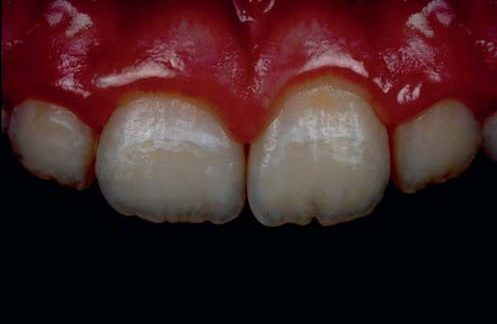
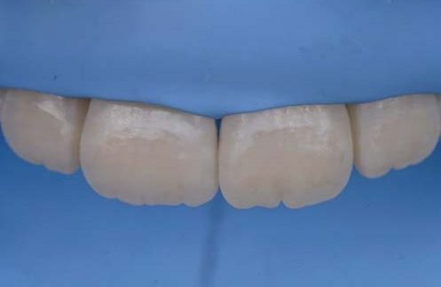
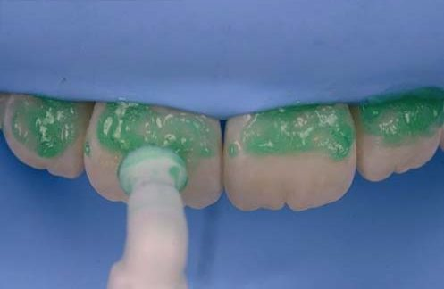
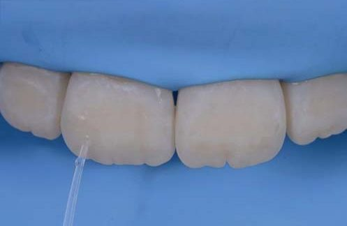
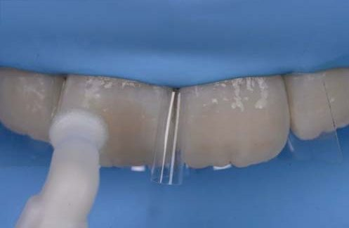
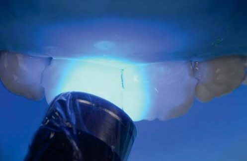
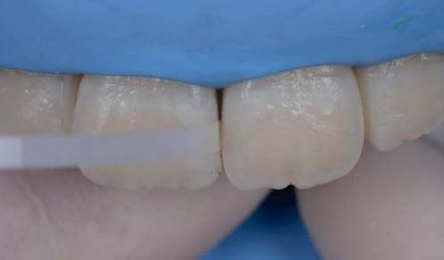
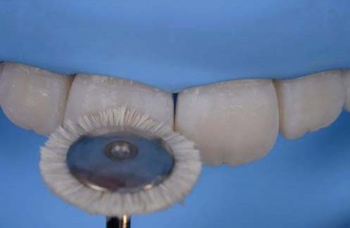
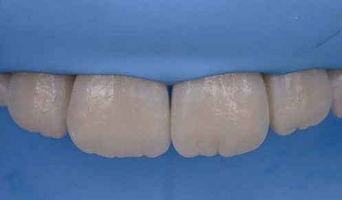
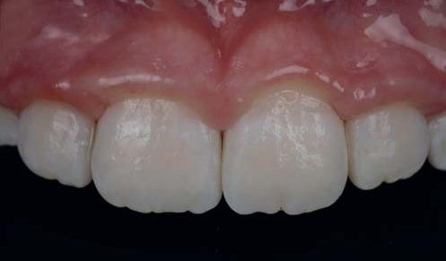
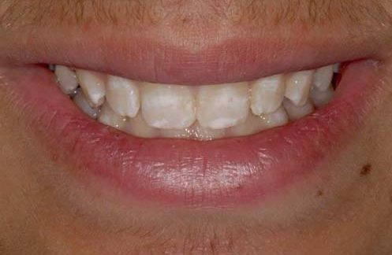
Зайву смолу у міжпроксимальних ділянках видаляємо полірувальною стрічкою, а з пришийкових (слід уникати таких ситуацій і видаляти смолу звідти у неполімеризованому вигляді) — інструментом LM Arte Eccesso.
Етапи фінішної обробки та полірування мають велике значення, оскільки так зуб одразу матиме ідеальний вигляд і довготермінову стабільність. На цьому зображенні бачимо щітку з козячої щетини, але обов’язково слід обробити зуби гумовою полірувальною головкою, а потім відполірувати алмазною пастою. Це єдиний спосіб отримати якісний блиск.
Вигляд одразу після полірування смоли. Неполірована поверхня має непоганий вигляд одразу після засвічування, але поверхневий шар смоли залишається інгібованим киснем. Тому вона дуже чутлива до впливу середовища ротової порожнини та забарвлення. Залишати смолу у невідполірованому стані протипоказано, тому що вона зіпсується протягом кількох тижнів. Механічне полірування частково впливає і на поверхневу частину емалевих призм, надаючи цій гібридній поверхні дуже стабільного та ефектного блиску.
Білі плями перетворено на «особливі ознаки типу 2М».3 Як стоматолог, так і пацієнт були дуже задоволені лише двома циклами протравлювання, що мінімізувало тривалість лікування і потенційну шкоду. Не забувайте, якщо обробити зуби кислотою більш ніж 4 рази, ризик втрати тканин через хімічну реакцію буде набагато більшим, і виправляти це доведеться композитом.
Клінічний випадок 2
Було запропоновано розширити перелік показань для інфільтрації смолою (Tirlet G.) і додати до нього флюороз та плями травматичного походження, оскільки у цих випадках, як і у випадку з початковим карієсом, уражена лише зовнішня третина емалі (Denis M.). Коли біла пляма уражає шари емалі, що розташовані глибше (у разі молярно-різцевої гіпомінералізації, посттравматичної гіпомінералізації деяких типів або якщо пацієнт має тяжкі форми флюорозу), інфільтрація не буде ефективною.
У цьому випадку ми бачимо плямисту форму флюорозу з білими плямами легкого та середнього ступенів виразності. Вигляд усередині ротової порожнини. Найбільше флюороз вплинув на верхні зуби.
Плями мають неестетичний вигляд. Пацієнт звернувся до нас по відповідне, неінвазивне лікування. Порада. Найкраща стратегія передбачає перший, обов’язковий етап домашнього відбілювання за допомогою 10 % пероксиду карбаміду (White Dental Beauty). Він триває 15 днів. Звучить парадоксально, але численні плями змінюються, колір субстрату білішає, а контраст між плямою і тканинами стає менш помітним. Плями легше інфільтрувати після відбілювання, хоча причина цього досі невідома.
Шкала Vita перед лікуванням дозволяє з’ясувати, який приблизно відтінок має здоровий зуб, а також встановити відтінок до і після відбілювання.
Оцінювання за шкалою Vita після відбілювання. Зверніть увагу на те, як змінилися численні плями на зубах 21, 22, які були найбільш помітними.
Після відбілювання можна помітити посилення загальної яскравості. Білі плями вже не такі помітні, але, як ми й передбачали, потрібна додаткова обробка.
Інтраоральний вигляд перед протравлюванням кислотою.
Поляризоване зображення перед протравлюванням та інфільтрацією. З таким освітленням ми можемо чітко роздивитися кожну пляму. Це найкращий спосіб оцінити результат інфільтрації.
Нанесення Icon etch на 2 хвилини. Нанесення Icon dry. Наноситься велика кількість матеріалу на 2 хвилини, щоб отримати уявлення про майбутній вигляд після лікування, як і в попередньому випадку.
Смола з низькою щільністю наноситься на 2-3 хвилини без інтенсивного навколишнього освітлення. Майте на увазі, що неповна інфільтрація через брак часу може зіпсувати все лікування.
Після інфільтрації на зубах бачимо відсутність неприємних білих плям. У разі легкого флюорозу спрогнозувати результат лікування зазвичай дуже легко. Пацієнт задоволений новою, яскравішою усмішкою і зубами без плям.
Поляризоване зображення. До лікування. На поляризованому зображенні після лікування добре видно, наскільки успішною була ця процедура. Цифрове поєднання, щоб продемонструвати різницю між «до» і «після».
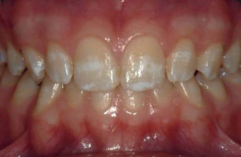
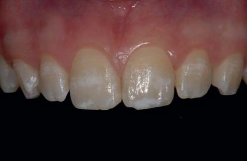
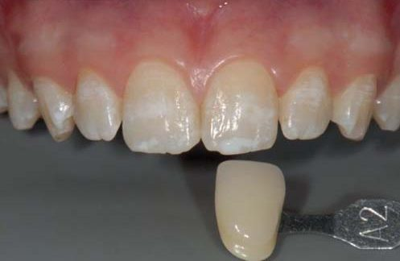
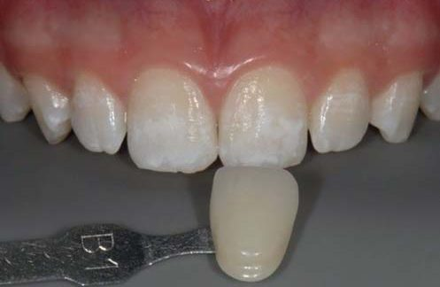
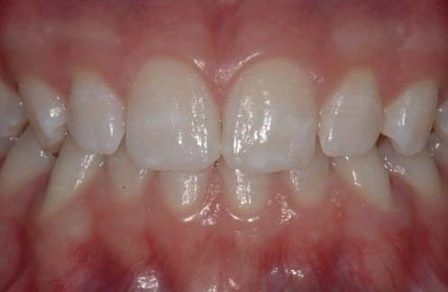
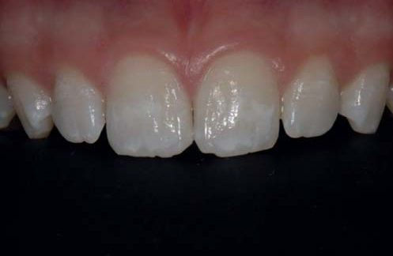
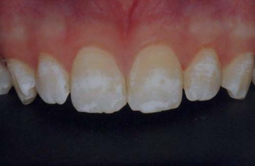
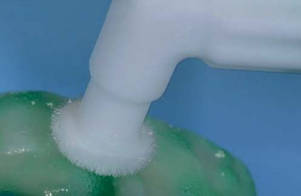
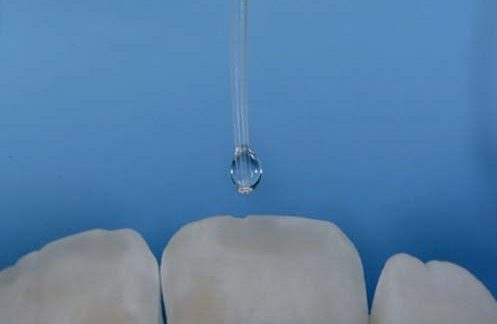
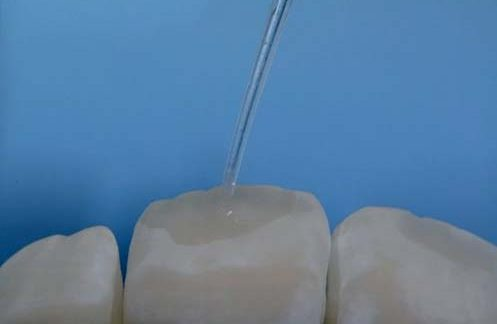
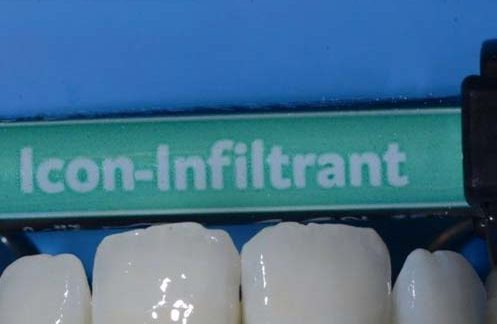
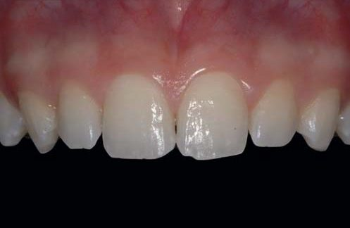
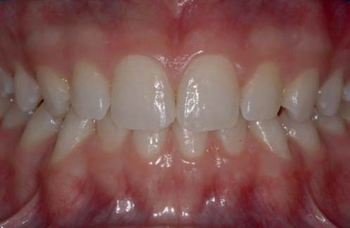
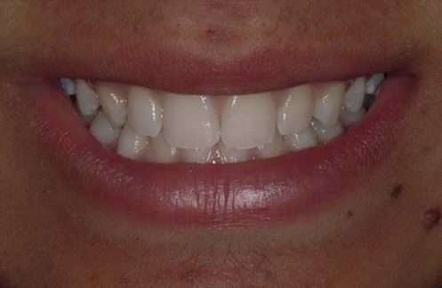
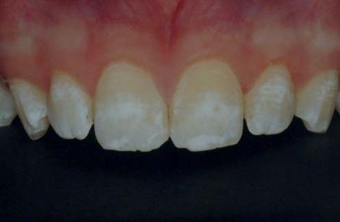
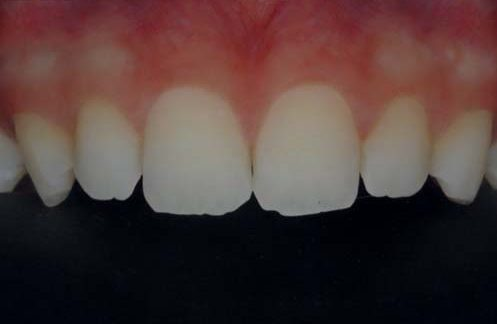
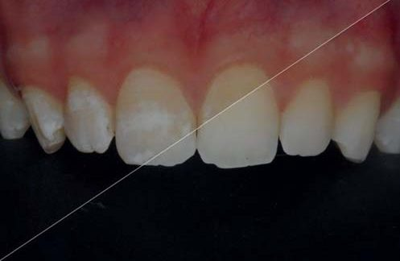
Висновки
Інфільтрація смолою — ефективний спосіб лікування білих плям емалі у багатьох випадках, зокрема після ортодонтичного лікування та в разі легкого флюорозу.
Результати перших клінічних досліджень підтверджують ефективність усунення уражень, що з’являються після ортодонтичного лікування, за допомогою інфільтрації (61 % було усунуто повністю і 33 % — неповністю) (Kim S. і співавтори). З власного досвіду можу сказати, що навіть коли не вдалося повністю прибрати плями, пацієнти все одно задоволені результатом.
Після успішної інфільтрації білих плям смолою ми вирішили запропонувати цю техніку для усунення білих плям різної етіології. Отже, на прикладі нашої серії клінічних випадків видно, що завдяки інфільтрації смолою можна ефективно лікувати поверхневі ураження емалі незалежно від їхньої етіології.
Відбілювання є дуже важливою процедурою, адже так можна полегшити усунення плям білого та коричневого кольорів і процедуру інфільтрації смолою.
Над першим випадком працювала лікар Elisa Oneto, над другим — лікарі Elisa Oneto й Anna Salat. Хочу подякувати лікареві Elisa Oneto, з якою завжди приємно працювати у випадках, що передбачають міждисциплінарний підхід.
Література
- Tirlet G., Attal J. P. L'érosion/infiltration: une nouvelle thérapeutique pour masquer les taches blanches. Inf Dent 2011;2–7.
- Salat A., Devoto W., Manauta J. Achieving a precise color chart with common computer software for excellence in anterior composite restorations. Eur J Esthet Dent. 2011;6(3):280–96.
- Manauta J., Salat A. Layers. An atlas of composite resin stratification. Chapter 5. Quintessence Books, 2012.
- Denis M., Atlan A., Vennat E., Tirlet G., Attal J. P. White defects on enamel: diagnosis and anatomopathology: two essential factors for proper treatment (part 1). Int Orthod. 2013;11(2):139–65.
- Kim S., Kim E. Y., Jeong T. S., Kim J. W. The evaluation of resin infiltration for masking labial enamel white spot lesions. International Journal of Paediatric Dentistry 2011;21:241–8.